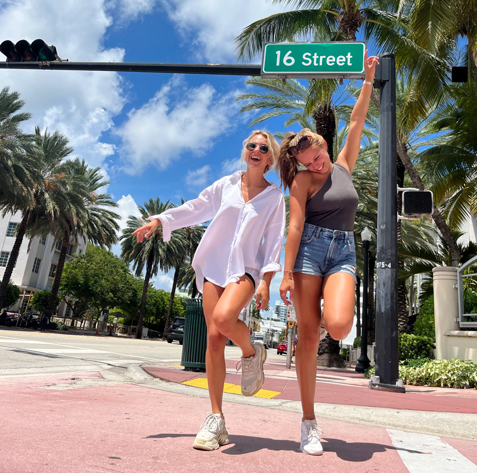

Kom op reis met mij!
Welkom bij mijn gemaakte reis! Vorige jaar ben ik een half jaar op reis geweest naar Amerika en Curacoa. Hierbij laat ik zien wat ik daar heb beleefd een gedaan. In april begon ik met mijn reis naar New York City, de grote big apple! Hier heb ik 3 maanden gewoond. Daarna veder gereisd naar Miami en hier ook nog eens 3 maanden verbleven. Als kers op de taart ben ik ook nog eens 2 weken in Willemstad op Curaçao geweest. Hierbij vertel ik mijn verhaal en ervaringen over deze 3 steden!
Wie is Elise?
Mijn naam is Elise Obbes, 21 jaar en onwijs reislustig. Heb altijd al de droom gehad om in m’n eentje te gaan reizen door Amerika. Vorige jaar is dit tot z’n werkelijkheid gekomen en heb ik de stoute schoenen aangetrokken en ben ik op reis gegaan! Op dit platform deel ik mijn verhalen wat ik daar heb beleefd, ook deel ik wat tips als je ook naar een van deze steden toe wilt gaan. Benieuwd? Lees gerust veder!